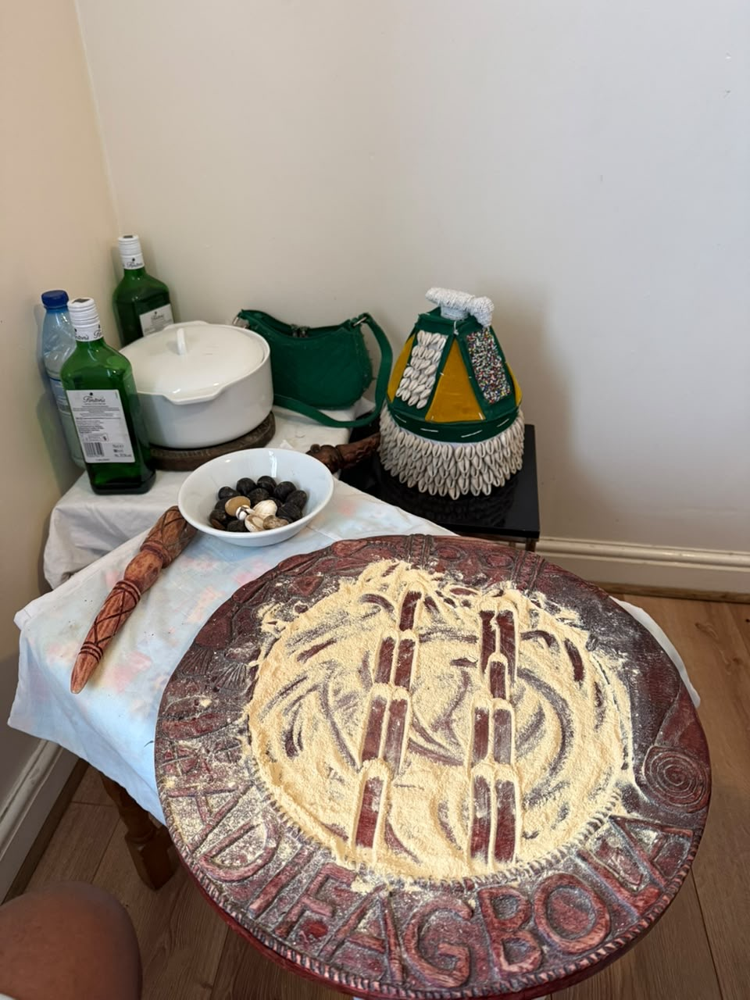
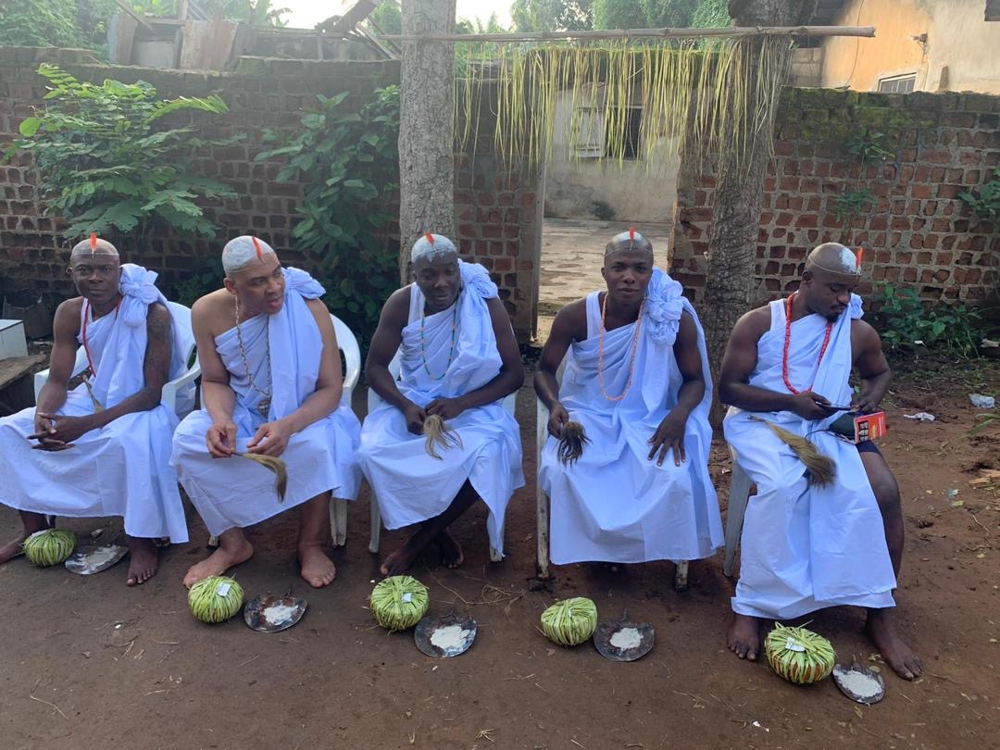
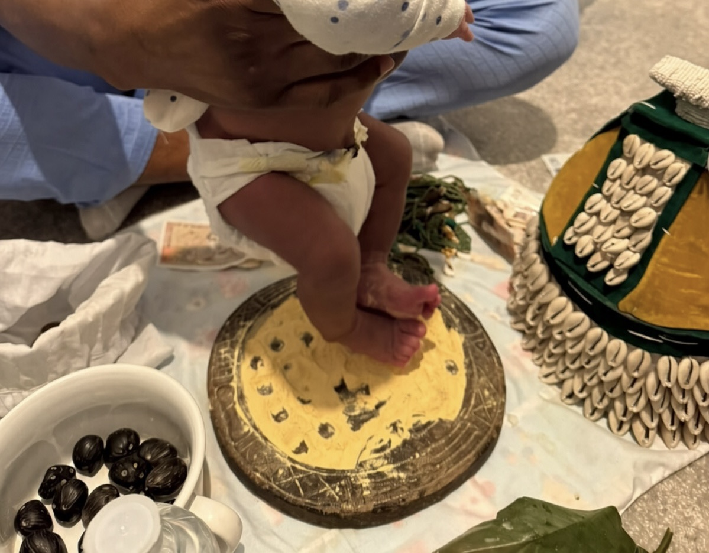
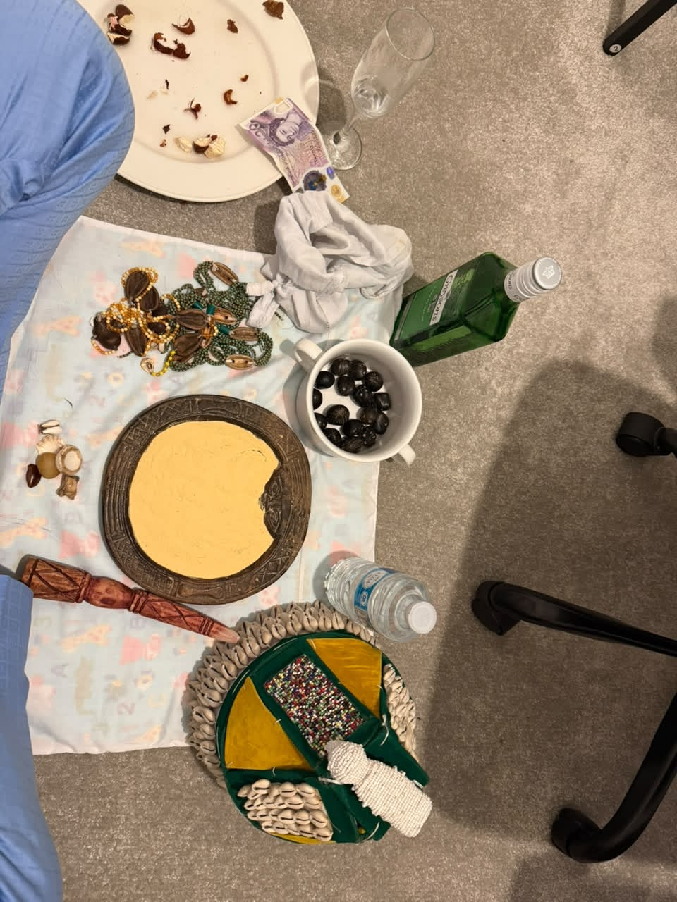

Ifá Spiritual Consultation & Divination
Authentic Ifá divination (Dáfá) offering spiritual insight, guidance and clarity on destiny (Ori) and life’s path.
Authentic Ifá consultation, initiation, ceremonies and cultural services available to clients worldwide.

Authentic Ifá divination (Dáfá) offering spiritual insight, guidance and clarity on destiny (Ori) and life’s path.

Traditional Ifá initiation rites for those called to receive Ifá, deepen their spiritual path and enter the lineage of practice.

Sacred naming ceremonies that welcome a new soul into the family and community, rooted in ancestral tradition.
Rites dedicated to honouring ancestors and maintaining the sacred connection between the living and those who came before.
Compassionate spiritual guidance to support emotional, mental and spiritual wellbeing through traditional frameworks.

Spiritual cleansing and blessing of homes and spaces to invite peace, protection and positive energy.
Gatherings, celebrations and community events that foster connection, learning and shared Yoruba heritage.
Traditional marriage blessings and Yoruba wedding rites that honour both partners and their families.
Structured learning in Ifá knowledge, divination principles and traditional practices for serious students.
Sessions that share the language, history, values and living traditions of Yoruba culture.
Traditional herbal knowledge and wellbeing support drawn from Yoruba healing practices.
Carefully prepared spiritual items and tools to support personal practice and connection to tradition.
Ready to begin? Reach out to schedule an Ifá consultation.
Book an Ifá Consultation100% Privacy & Confidentiality Maintained